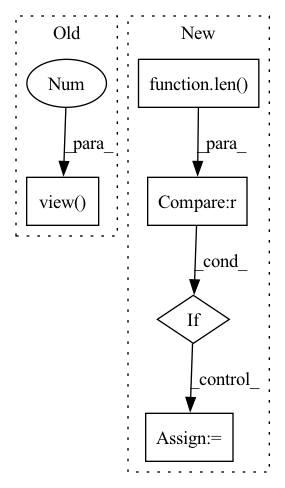

Pattern ID :37670
Before Change
video = torch.cat([image.unsqueeze(2), video], dim=2) // 1 x 64 x 21 x 16 x 16
else:
video = image.unsqueeze(2)
video = video.view( *video.shape[:3], -1 ) .permute(0, 2, 3, 1) // B x T x (H x W) x C -> 1 x 21 x (16*16) x 64
video = self.attention(video) // 1 x 21 x 256 x 64
return video
After Change
video = torch.cat([self.learned_frame.unsqueeze(0), image.unsqueeze(2), video], dim=2)
video = self.stem(video)
s = None
if len(self.encoder) > 0 :
for block, remapper in zip(self.encoder, self.remapper):
if block.scaler is not None:
prev_s = nn.functional.interpolate(video, scale_factor=(1, 0.5, 0.5), recompute_scale_factor=False)
else:
prev_s = video
video = block(video, s)
In pattern: SUPERPATTERN
Frequency: 4
Non-data size: 5
Instances Fragment ID: 108233922
Project Name: laion-ai/phenaki
Commit Name: e510eaef70feb098d2c1b5fac8b34291c1955c9e
Time: 2022-10-17
Author: d6582533@gmail.com
File Name: vivq.py
M Class Name: Encoder
N Class Name: Encoder
M Method Name: forward(3)
N Method Name: forward(3)
M Parent Class: nn.Module
N Parent Class: nn.Module
M File Name: vivq.py
N File Name: vivq.py
M Start Line: 62
M End Line: 70
N Start Line: 90
N End Line: 104
Before Change
return mean, std
def log_prob(self, x, z):
mean_std = self.net(z.view(-1 , *z.size()[2:]) ).view(
*z.size()[:2], x.size(1) * 2, *x.size()[3:]
)
n_hidden = mean_std.size()[2] // 2After Change
n_hidden = mean_std.size()[1] // 2
mean = mean_std[:, :n_hidden, ...]
var = torch.exp(mean_std[:, n_hidden:, ...])
if len(z) > len(x) :
x = x.unsqueeze(1)
x = x.repeat(1, z.size()[0] // x.size()[0], *((x.dim() - 2) * [1])).view(
-1, *x.size()[2:]
) Fragment ID: 108233911
Project Name: vincentstimper/normalizing-flows
Commit Name: 249a81366354d8bcf2a6a227869f0091c0a91963
Time: 2023-01-20
Author: vincent.stimper@gmail.com
File Name: normflows/distributions/decoder.py
M Class Name: NNDiagGaussianDecoder
N Class Name: NNDiagGaussianDecoder
M Method Name: log_prob(3)
N Method Name: log_prob(3)
M Parent Class: BaseDecoder
N Parent Class: BaseDecoder
M File Name: normflows/distributions/decoder.py
N File Name: normflows/distributions/decoder.py
M Start Line: 57
M End Line: 66
N Start Line: 56
N End Line: 68
Before Change
model.zero_grad()
if args.model == "Transformer":
output = model(data)
output = output.view(-1 , args.ntokens)
else:
hidden = repackage_hidden(hidden)
output, hidden = model(data, hidden)
loss = criterion(output, target)After Change
with optimizer.skip_synchronize():
optimizer.step()
if batch_idx % args.log_interval == 0 or batch_idx + 1 == len(train_loader) :
train_loss.update(total_loss / elapsed_steps)
t.set_postfix_str("loss: {:4.2f}, ppl: {:6.2f}".format(
train_loss.avg.item(), math.exp(train_loss.avg.item())))
t.update(elapsed_steps)
total_loss.fill_(0.)
elapsed_steps = 0
if args.log_writer is not None:
args.log_writer.add_scalar("train/loss", train_loss.avg, epoch) Fragment ID: 108233915
Project Name: gpauloski/kfac_pytorch
Commit Name: 9c6365eed419a9b65cb67dc0f7b6d1680d0b54e4
Time: 2020-04-09
Author: gpauloski@yahoo.com
File Name: examples/pytorch_wikitext_rnn.py
M Class Name: AnonimousClass
N Class Name: AnonimousClass
M Method Name: train(10)
N Method Name: train(10)
M Parent Class:
N Parent Class:
M File Name: examples/pytorch_wikitext_rnn.py
N File Name: examples/pytorch_wikitext_rnn.py
M Start Line: 249
M End Line: 296
N Start Line: 257
N End Line: 302
Before Change
super(Sum, self).__init__(logical_operator)
def forward(self, x):
return torch.sum(x).view(1 )
class Add(PhysicalOperator, torch.nn.Module):
def __init__(self, logical_operator, val):After Change
super(Sum, self).__init__(logical_operator)
def forward(self, *x):
if len(x) > 1 :
x = torch.cat(x, dim=1)
return torch.sum(*x)
Fragment ID: 108233913
Project Name: microsoft/hummingbird
Commit Name: 5a89414897023a492f015bd7883d8109c08c9138
Time: 2021-03-05
Author: 1703543+ksaur@users.noreply.github.com
File Name: hummingbird/ml/operator_converters/onnx/onnx_operator.py
M Class Name: Sum
N Class Name: Sum
M Method Name: forward(1)
N Method Name: forward(2)
M Parent Class: torch.nn.Module,PhysicalOperator
N Parent Class: torch.nn.Module,PhysicalOperator
M File Name: hummingbird/ml/operator_converters/onnx/onnx_operator.py
N File Name: hummingbird/ml/operator_converters/onnx/onnx_operator.py
M Start Line: 68
M End Line: 68
N Start Line: 68
N End Line: 70